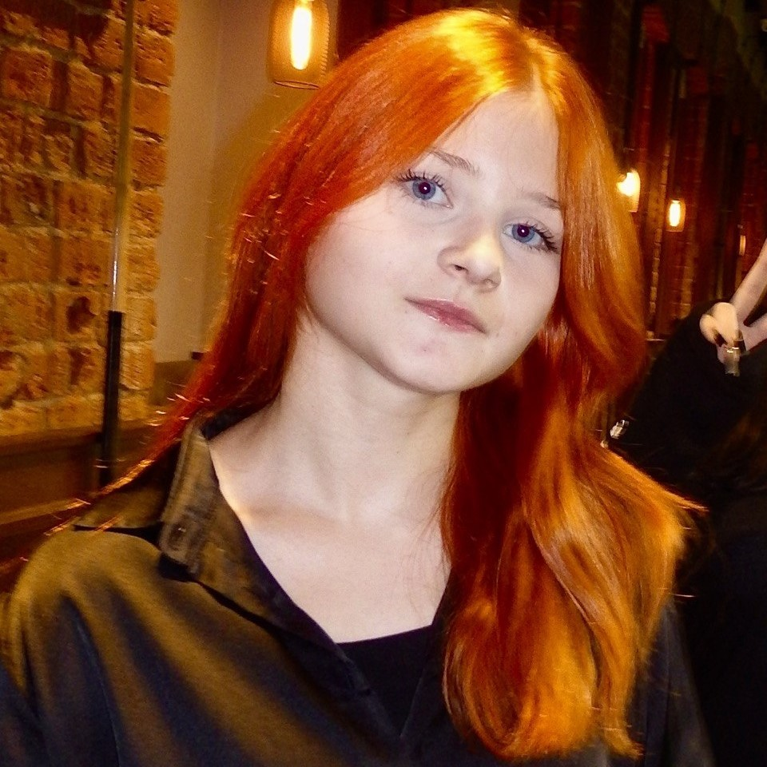

Горская Елена
Создание сайта проекта, оформление страниц, верстка и структура, разработка дизайна и навигации. В проекте писала сценарий для монтажа пилотного выпуска, представляла проект на дне открытых дверей.
Бормотова Марина
Разработка Telegram-бота, создание логики команд, настройка функционала и тестирование работы бота. В проекте занималась стратегией продвижения проекта в TikTok, представляла проект на дне открытых дверей.

Сотская Виолетта
Сбор информации для проекта, подготовка материалов, оформление текста и итогового отчёта. В проекте составляла контент-план, представляла проект на дне открытых дверей.